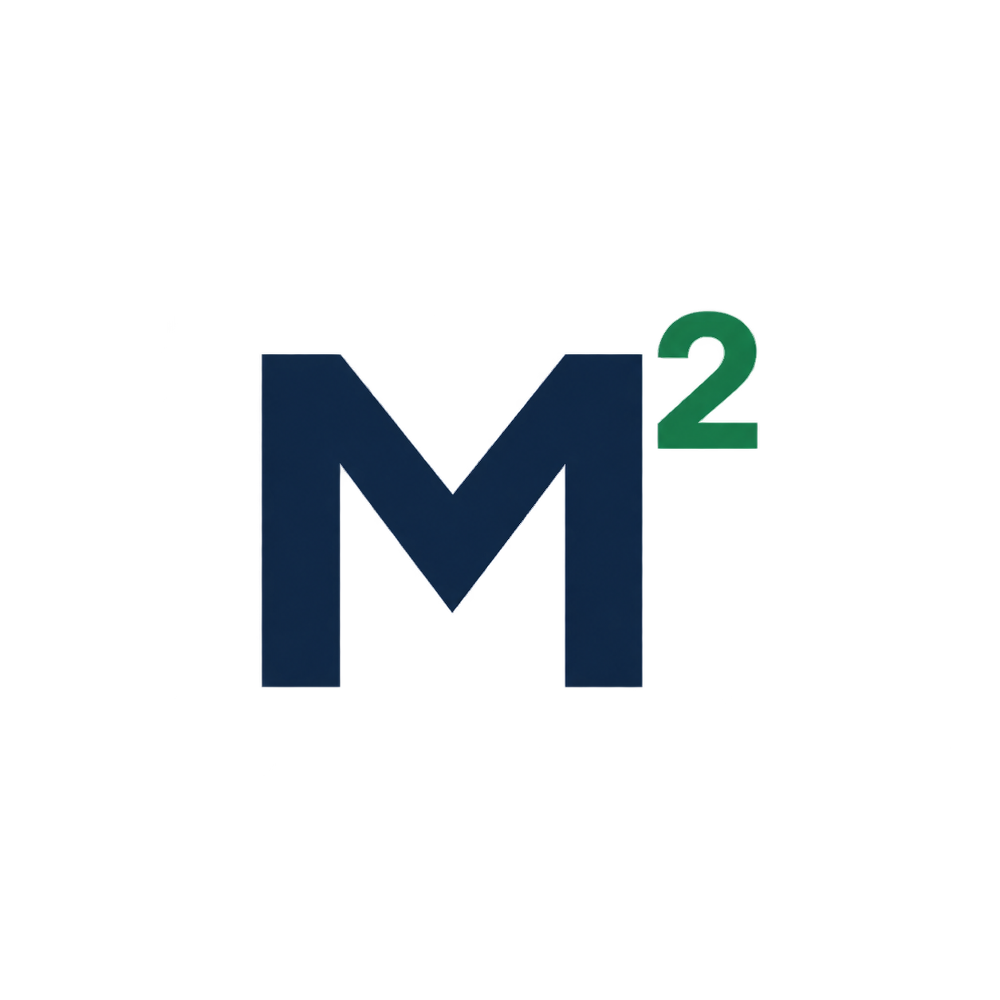
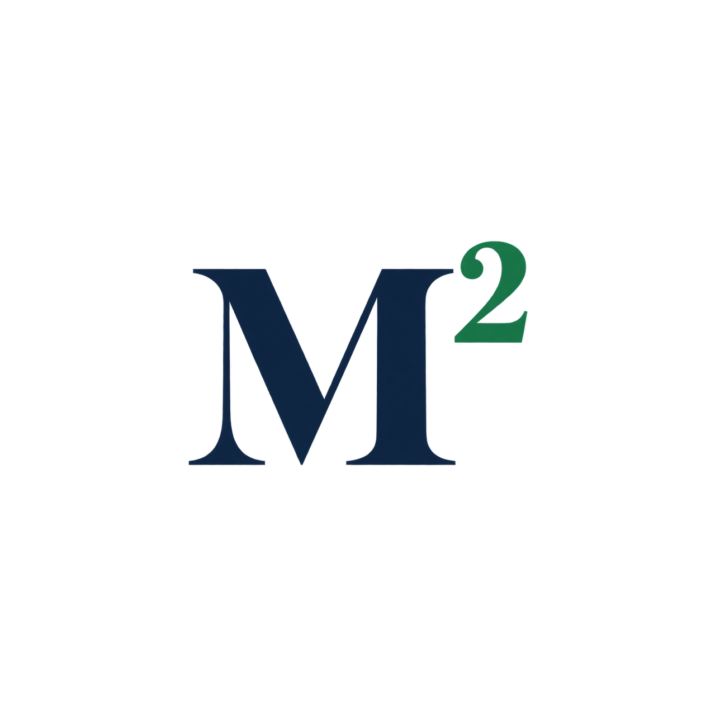
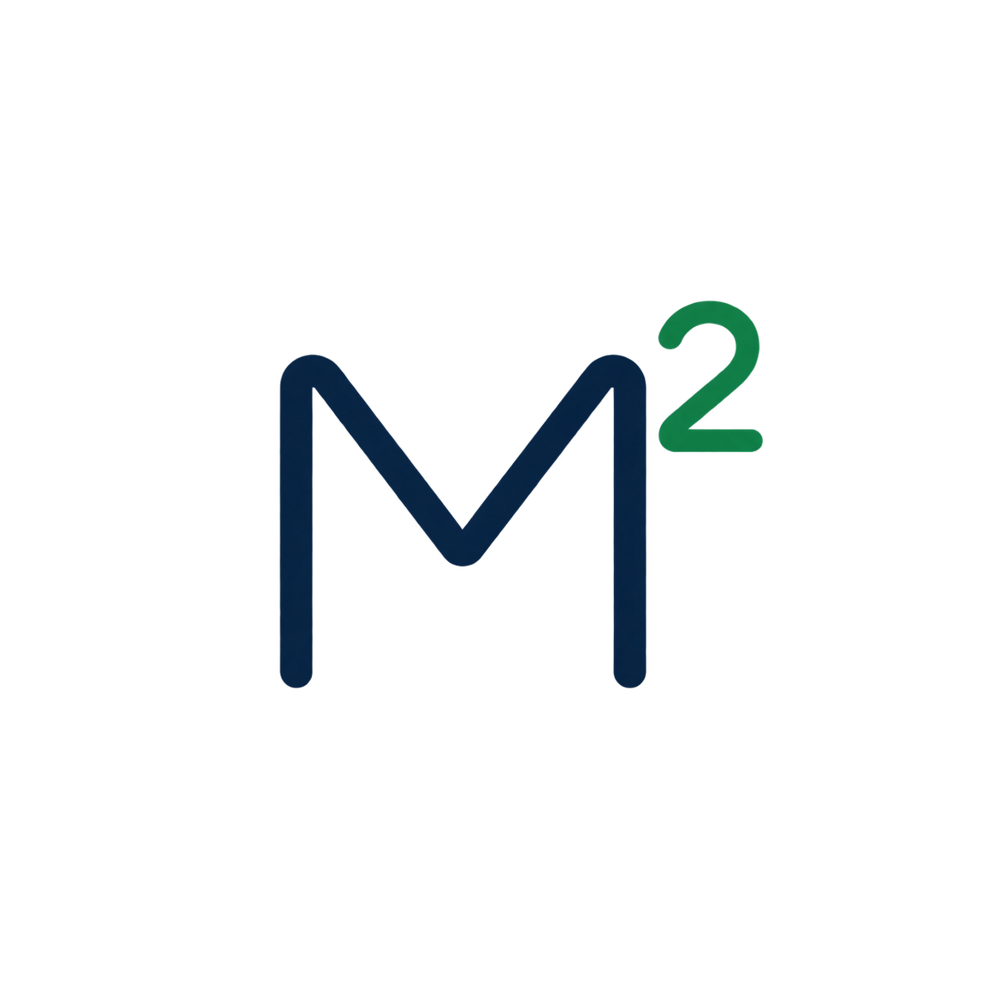
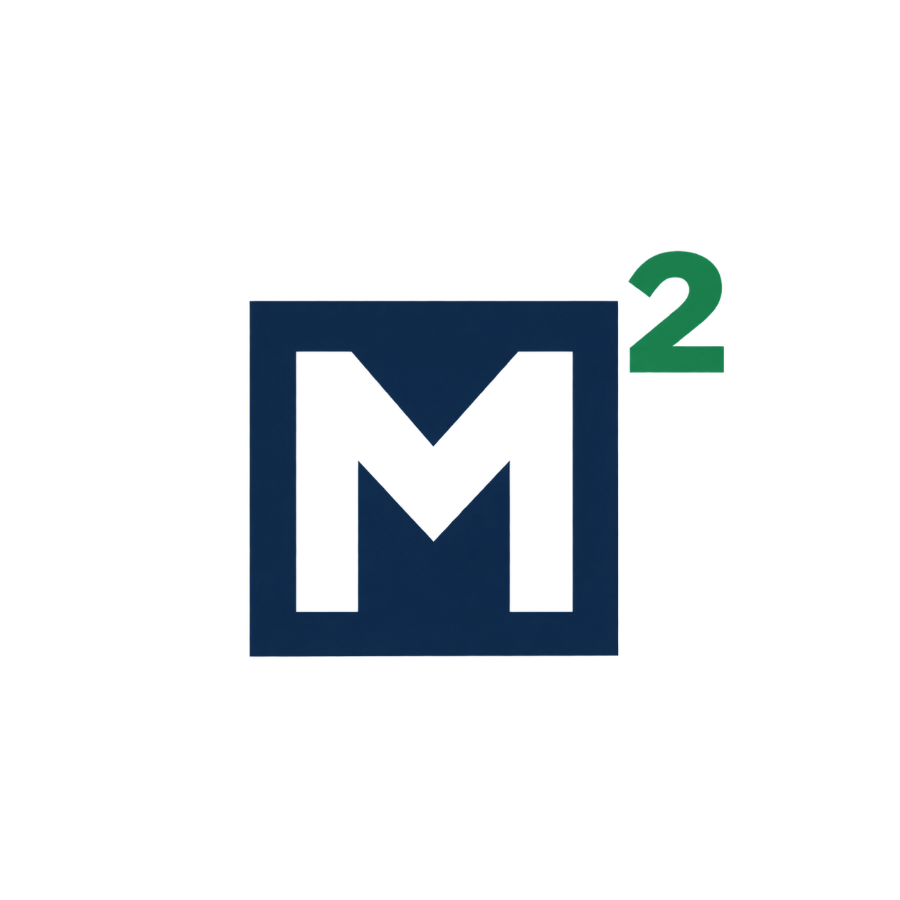
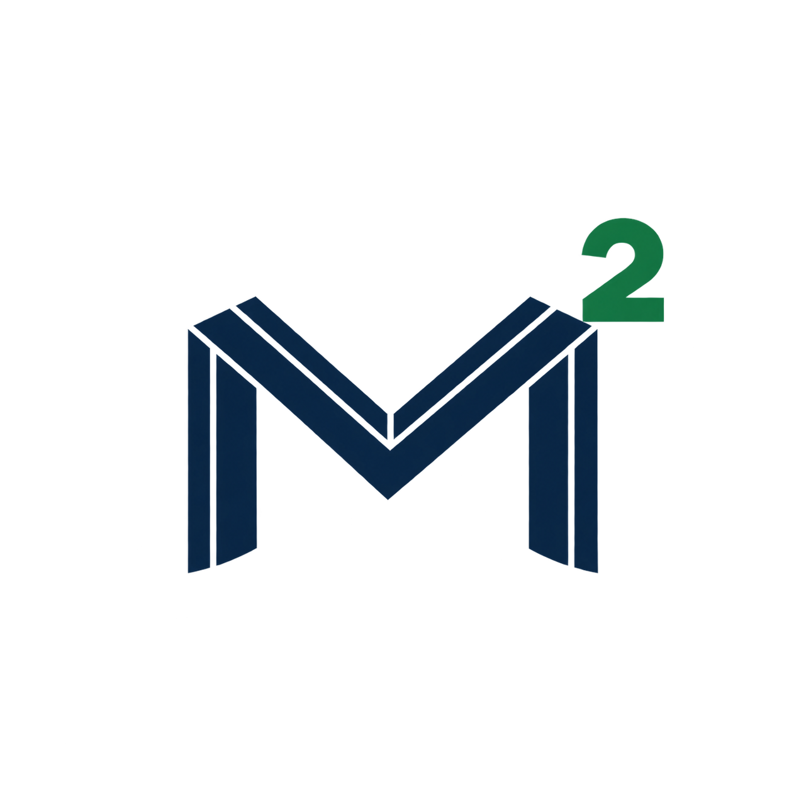
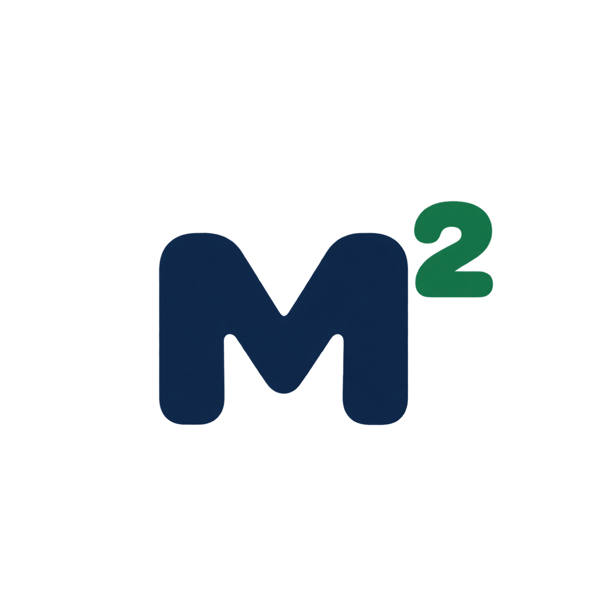
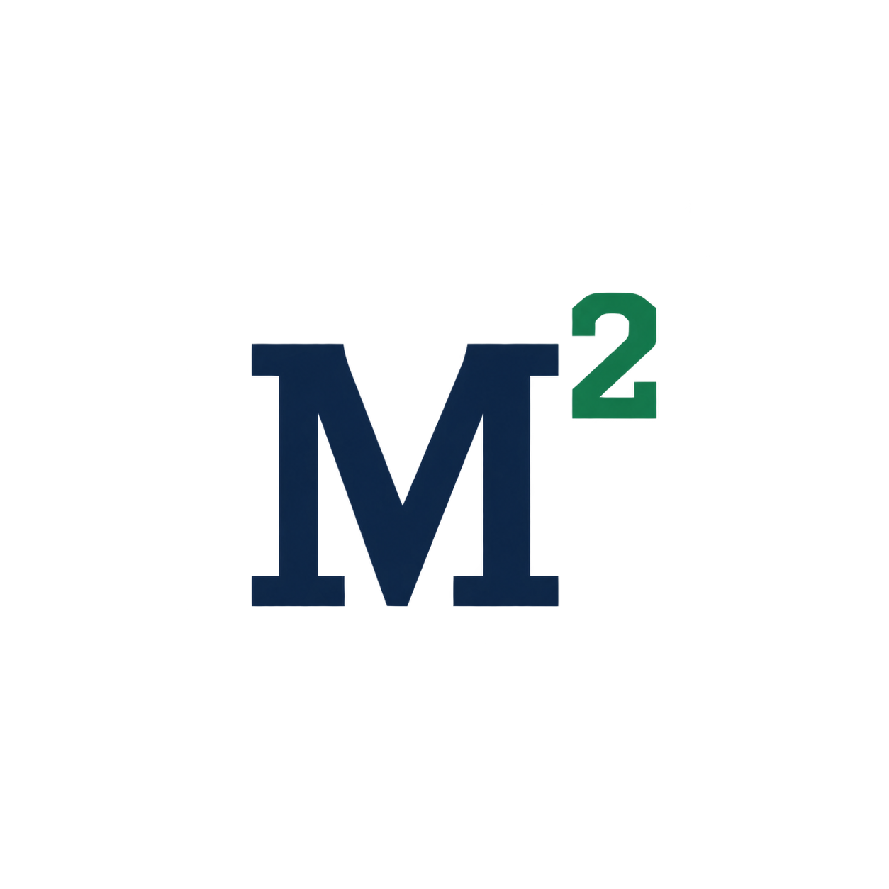
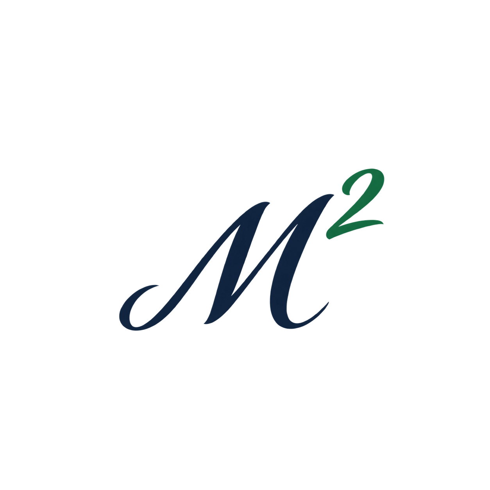
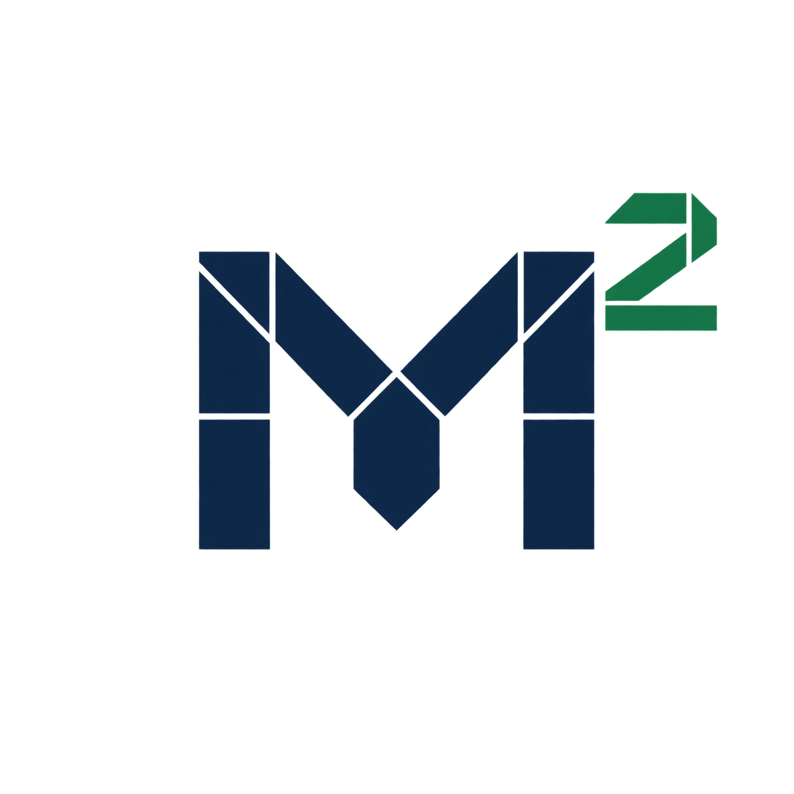
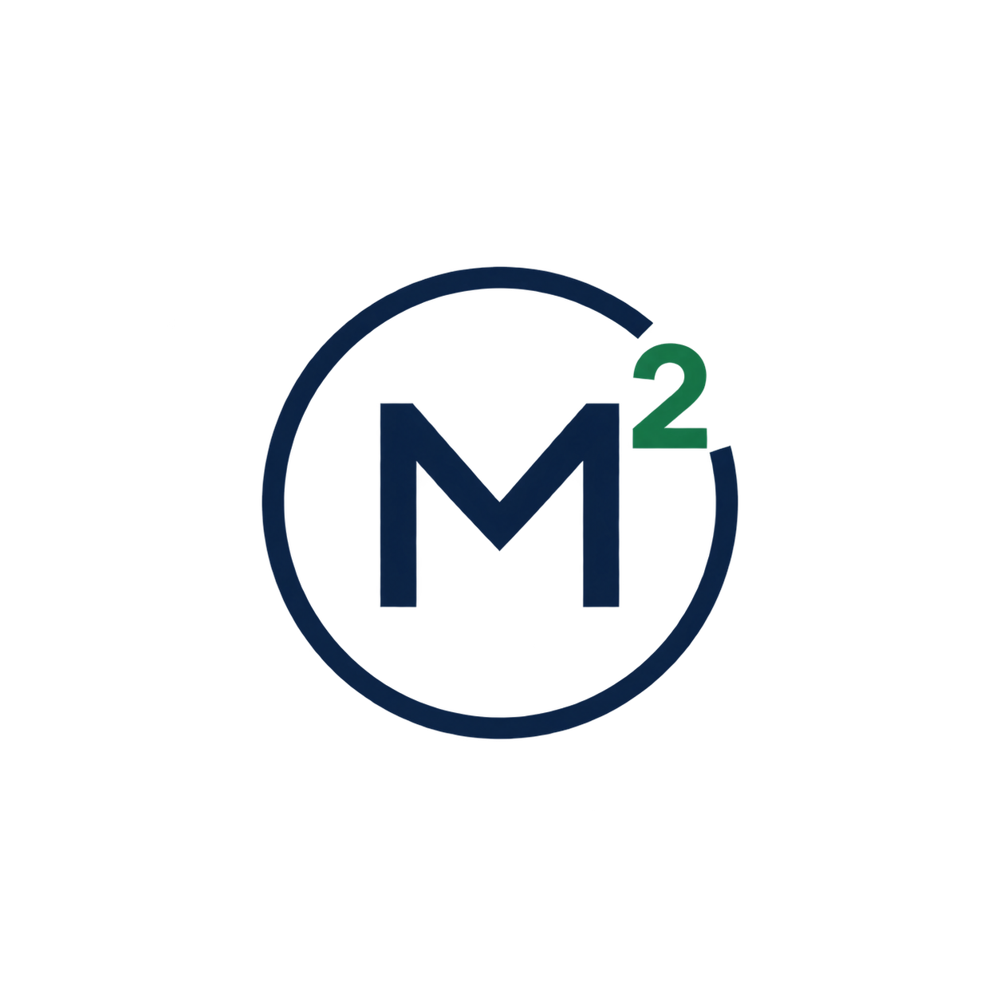

Color & identity
Simple. Solid. Distinct.
Five color directions and ten M² logo studies. Compare the palettes in context, then choose the mark that feels right.
01 / COLOR
Five restrained palettes.
Select a palette to see it on the sample below.
The first option uses the current navy and green. Your preview choice stays on this page.
Strategy · Design · Technology
Clear thinking.
Useful outcomes.
From the first question to the working solution. Strategy, websites and software built around what your business needs next.
Make the direction clear.
Turn a complex business question into a practical plan.
Build something useful.
Websites and software that help people get things done.
Keep improving.
Use evidence to understand what works and what comes next.
Color values & contrast checks
Keeps the current navy and green direction.
- ink
- #0F2440
- paper
- #FFFFFF
- surface
- #F2F5F7
- accent
- #14804A
- muted
- #596675
15.59:1Primary text on paper · AA ≥ 4.5:1
4.98:1White text on the button · AA ≥ 4.5:1
5.35:1Secondary text on surface · AA ≥ 4.5:1
Accent against the dark hero: 3.13:1 (≥ 3:1). Values use the WCAG relative-luminance formula for these solid color pairs.
02 / IDENTITY
Ten ways to make M².
Explore each mark at full size. Download the original PNG to keep a favorite.
Logo studies are shown on white for comparison. The current website identity remains in place.
{kind=link}

01Precise Geometry
A bold geometric M with an open central valley and a crisp superscript.
{kind=link}

02Editorial
A high-contrast serif mark with a poised, publishing-inspired character.
{kind=link}

03Continuous Line
An open monoline M with rounded terminals and a lighter visual touch.
{kind=link}

04Cut from a Block
A capital M carved out of a compact tile, paired with an elevated green 2.
{kind=link}

05Folded Structure
A broad architectural M formed from parallel ribbon-like strokes.
{kind=link}

06Humanist
A compact, rounded M with a warm and approachable software character.
{kind=link}

07Engineering Journal
A sturdy slab-serif mark with the clarity of technical typesetting.
{kind=link}

08Principal Signature
A flowing italic M with tapered strokes and a personal signature feel.
{kind=link}

09Modular System
A segmented geometric M that makes its construction visible.
{kind=link}

10Roundel
A circular emblem whose open ring makes space for the superscript.